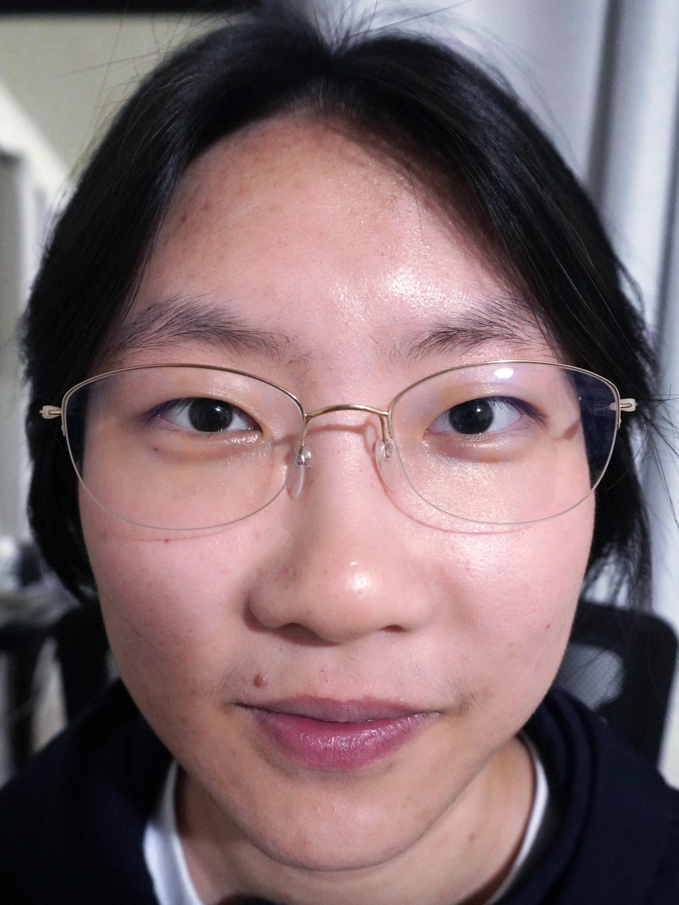
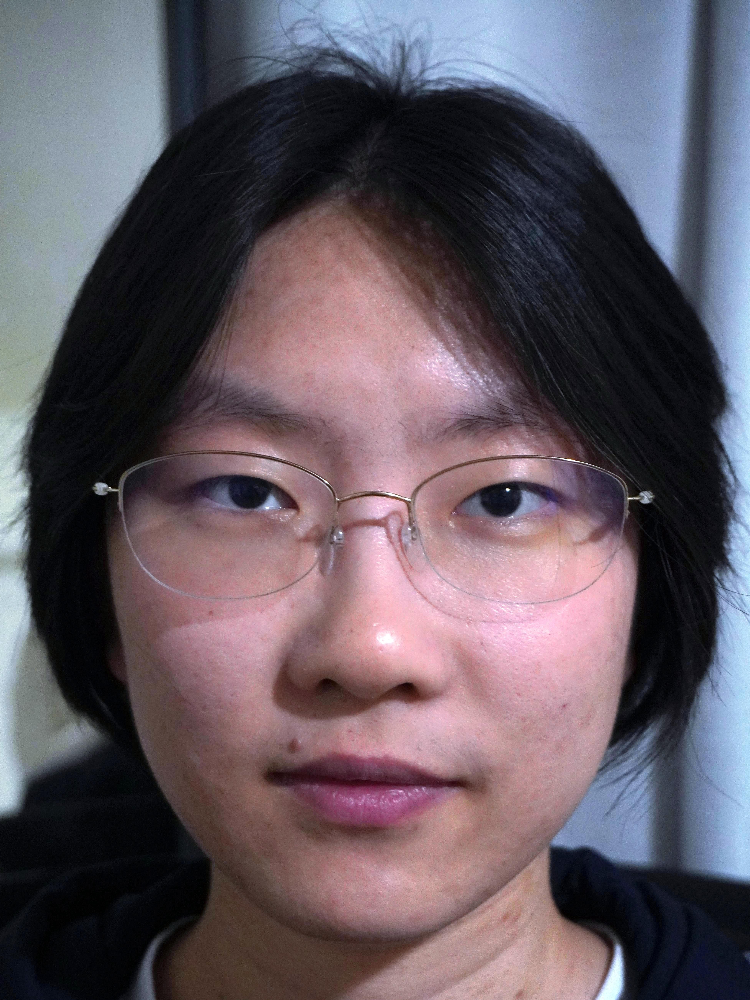
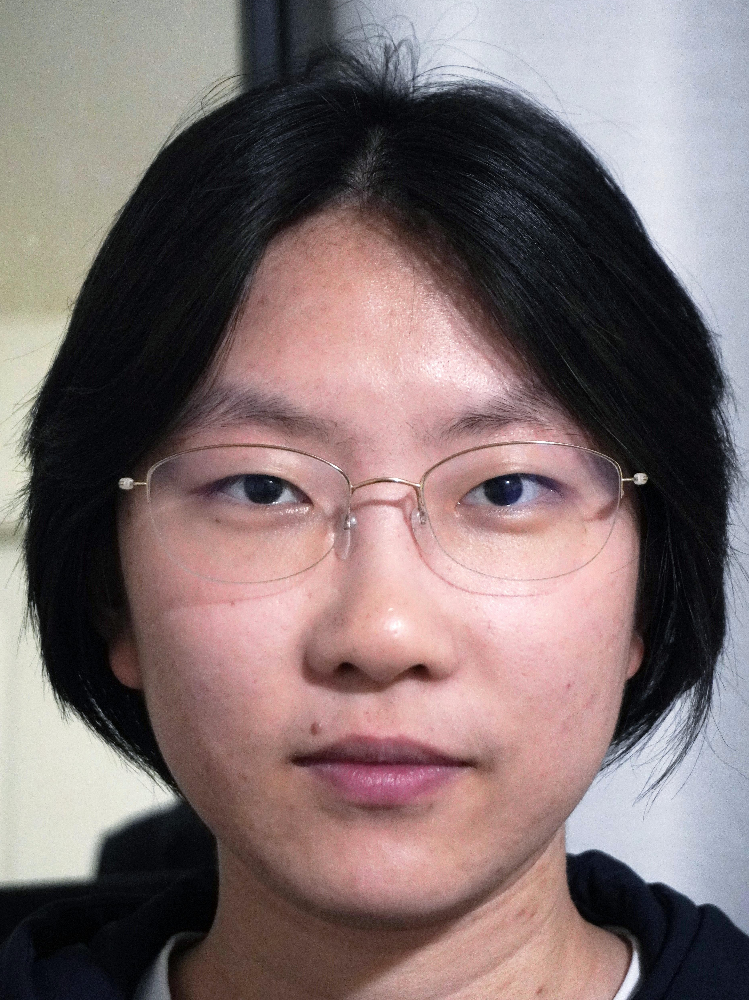
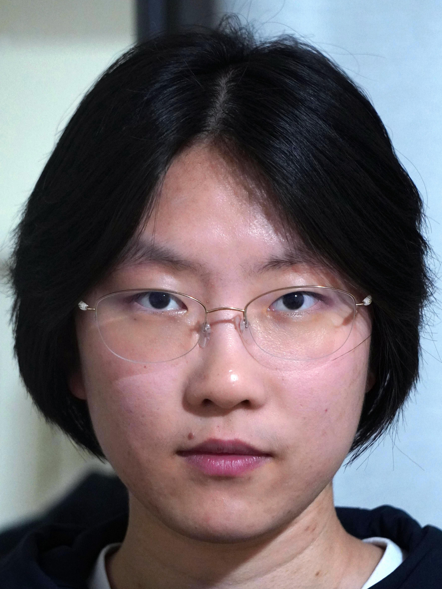
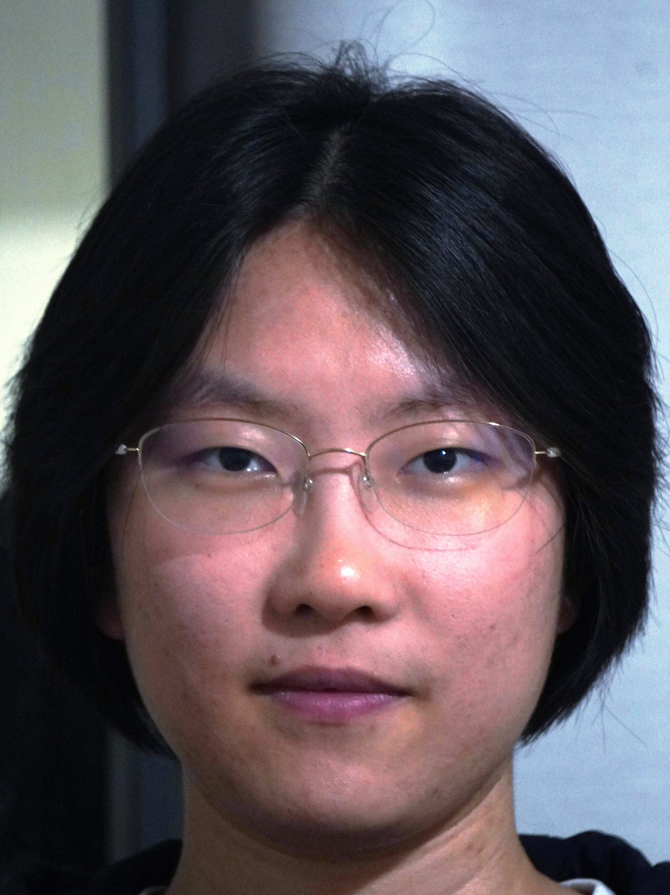
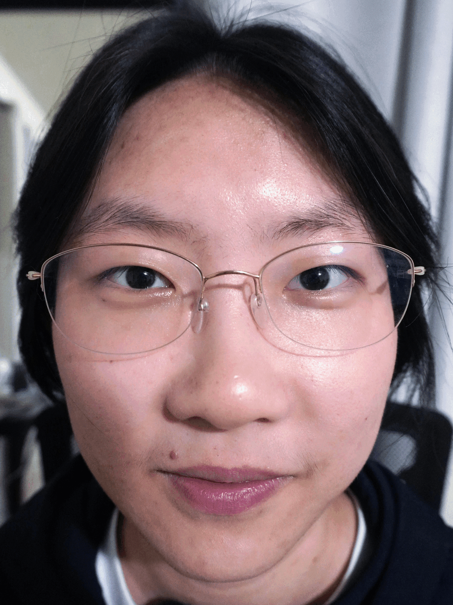
Perspective is solely dictated by the Center of Projection (camera position) relative to the subject. At 16mm (close-up), facial features closer to the sensor (like the nose) are significantly nearer than those further back (ears), introducing harsh perspective barrel distortion. Conversely, stepping extremely far back to 210mm leads to severe telephoto over-compression, which completely collapses facial depth and makes the face appear unnaturally wide and planar. I think the most aesthetically pleasing and natural proportions appear around 50mm to 120mm, which strikes the perfect balance by eliminating wide-angle facial distortion while preserving organic three-dimensional structure.
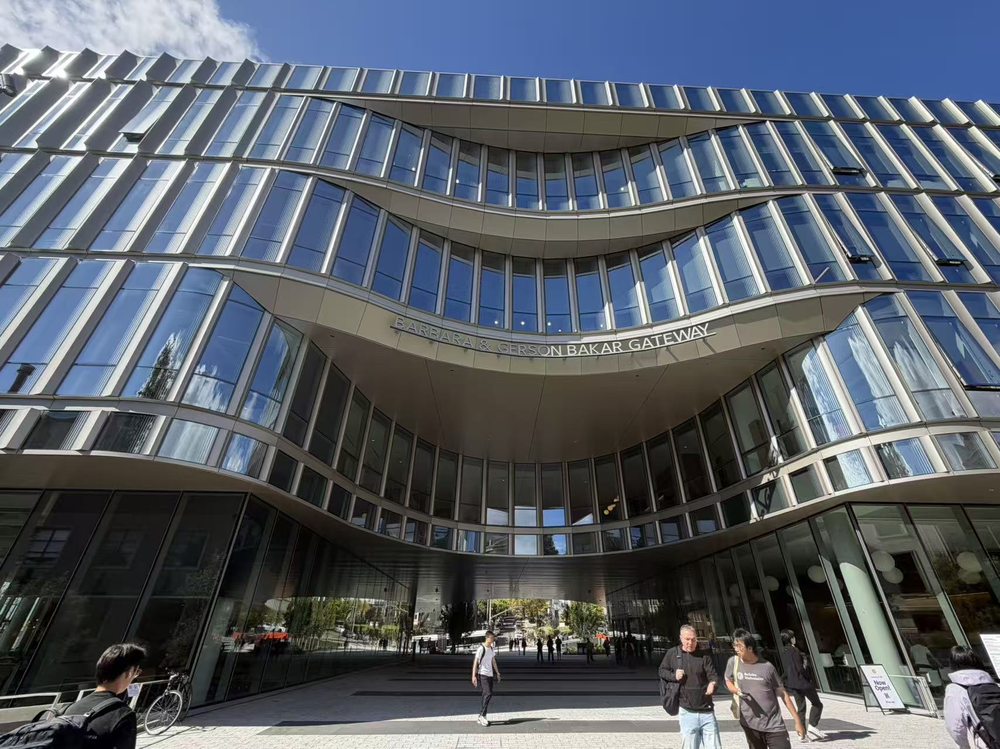
When capturing the Gateway Building from a distance using a telephoto focal length (52mm), the front facade and background elements maintain an almost identical relative distance to the camera lens. This triggers telephoto perspective compression, flattening architectural depth and making the structure appear planar. In contrast, stepping closer with an ultra-wide lens (14mm) drastically accentuates depth falloff, exaggerating vanishing lines and 3D volume.
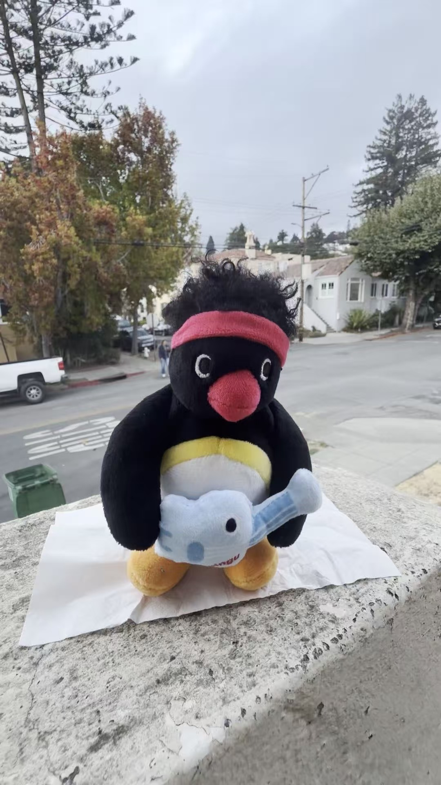
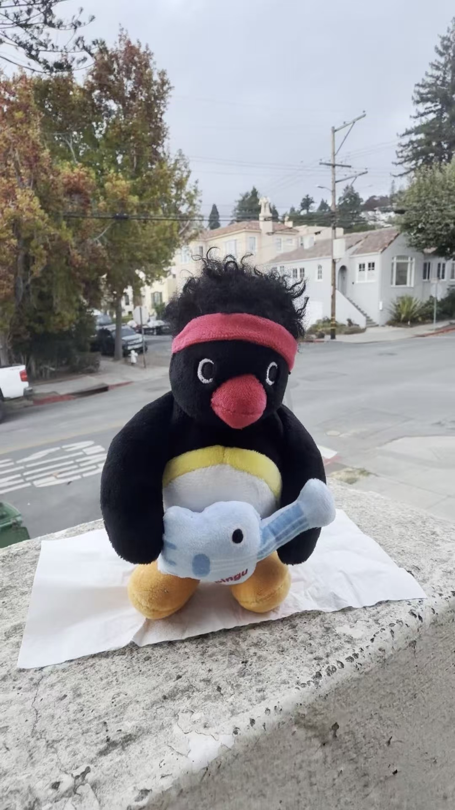
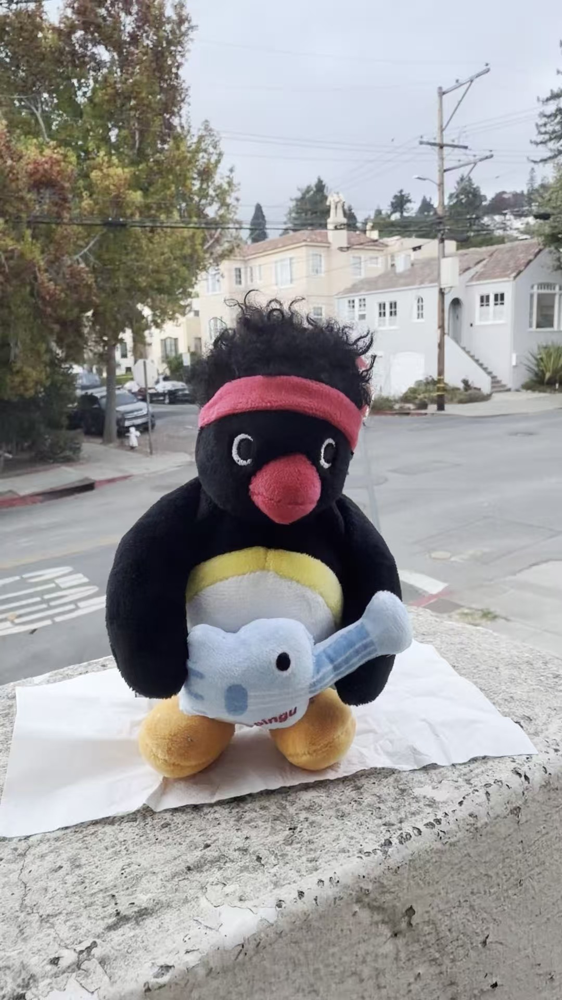
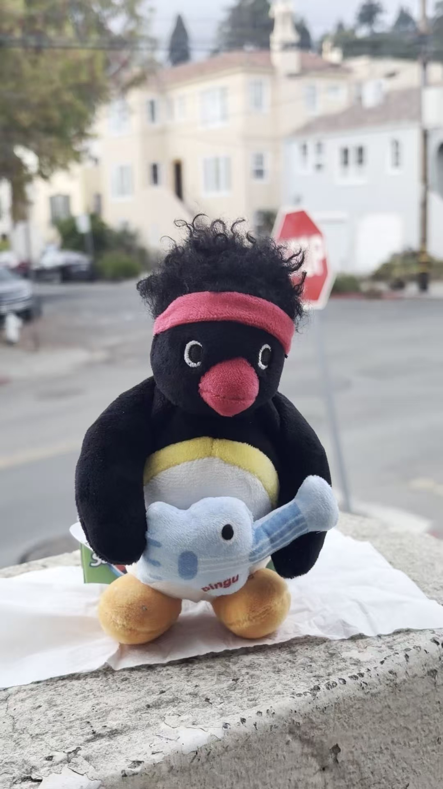
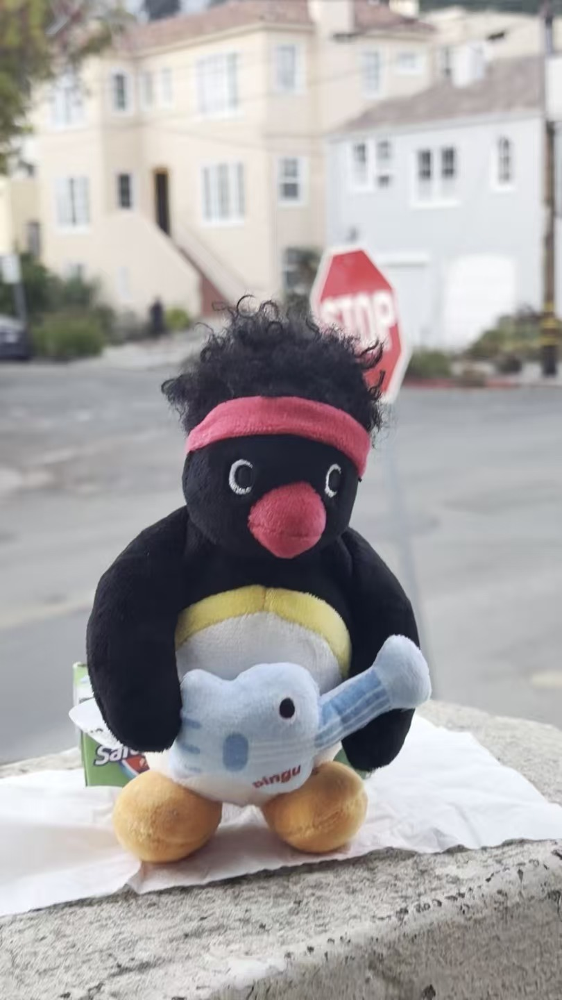
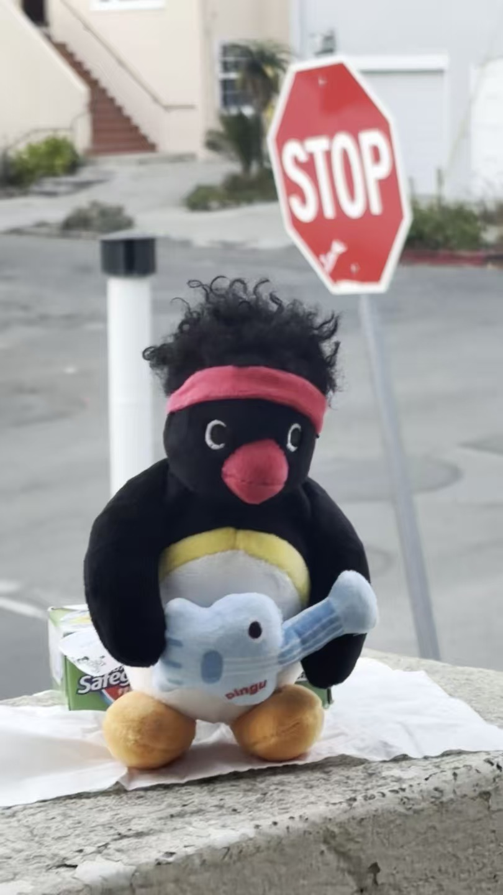
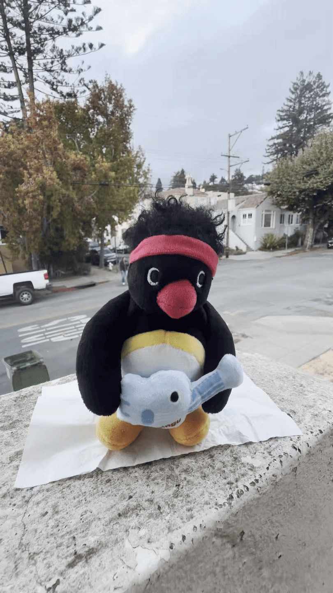
By steadily tracking the camera backward while synchronously increasing the focal length (zooming in), the foreground subject (Pingu Plush) maintains a constant magnification on the sensor. Concurrently, the angle of view shrinks, dynamically pulling in background perspective and creating the signature "Vertigo" visual distortion.